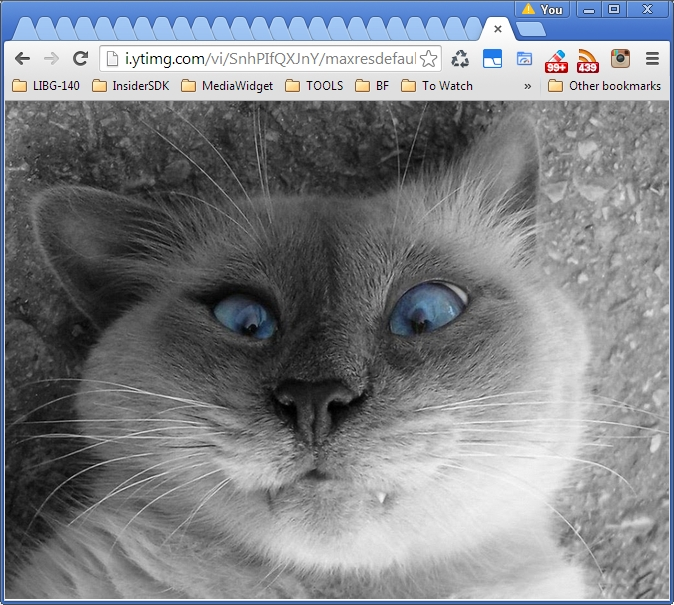
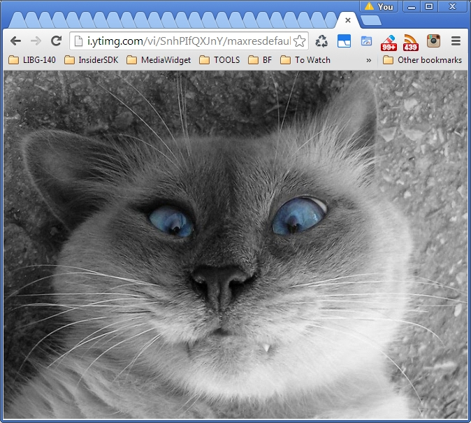
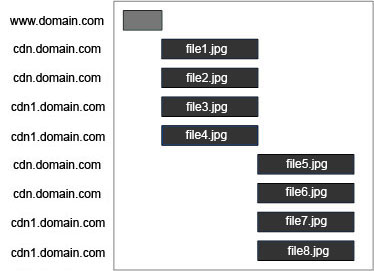
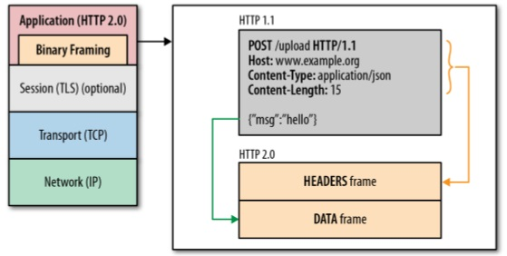
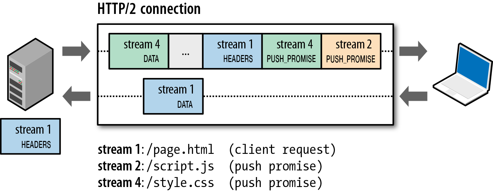
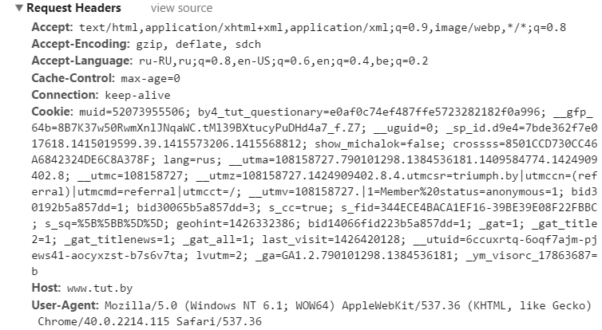

HTTP2


Промедление смерти подобно
Eng: Danger in delay
Steve Souders: 14 Rules
Lets split this rules
Use Cache!
3 - Add an Expires Header
8 - Make JavaScript and CSS External
13 - Configure ETags
14 - Make AJAX Cacheable
Captain evidence
5 - Put Stylesheets at the Top
6 - Put Scripts at the Bottom
7 - Avoid CSS Expressions
10 - Minify JavaScript
10.1 - Compress CSS/HTML/FONTS/IMAGES
12 - Remove Duplicate Scripts
Optimize network
1 - Make Fewer HTTP Requests
2 - Use a Content Delivery Network
4 - Gzip Components
9 - Reduce DNS Lookups
11 - Avoid Redirects
Lets imagine
That we followed all of Steve Souders advices


 


1991

Тим Бернерс Ли, 2014

LATENCY as perf. Bottleneck

Restriction: Six TCP streams per host

Domain sharding as a result
vk: sharding
vk: no sharding
Images are the same
 and
and 
But what the difference?
TCP Slow Start

Seems we need an upgrade
2012: Google starts to experment with HTTP
SPeeDY

http://caniuse.com/#feat=spdy

spdy live demo
chrome://net-internals/#events&q=type:SPDY_SESSION%20is:active
chrome://net-internals/#spdy


How to switch to the new protocol?
We need to change links in whole world?
http2://www.example.com
spdy://www.example.com

HTTP2 semantics is the same as in HTTP (urls, methods, headers, status codes, etc).
Transport layer is only changed
HTTP2 live demo
chrome://net-internals/#events&q=type:HTTP2_SESSION%20is:active
chrome://net-internals/#http2

Let's look into the details
OSI model

TCP/IP

New Binary Framing Layer
Request and Response Multiplexing
Sprites
Sprites
Multiplexing

Request Prioritization
SERVER PUSH
HTTP Headers
size is ~1kb

HTTP: Headers are compressed
HTTP2: Headers are compressed - YES (via HPACK)
HTTP2 advantages
Semantics compatible with HTTP
Get rid of sharding
Get rid of inlining
Get rid of spriting
Get rid of concatenating
Better compression
Low latency
Low resources (at client and at server)
More faster MPEG-DASH video streaming

Surprise time!
Google starts develop new protocol - QUCK (Quick UDP Internet Connections).
“But that is another story and shall be told another time.”
How to switch on SPDY

+ Web Server plugin/extension/addon
How to switch on HTTP2?
Web Server plugin/extension/addon
SPDY: Servers
HTTP2: Servers
Ilya Grigorik

Free Online version
Twitter: @igrigorik